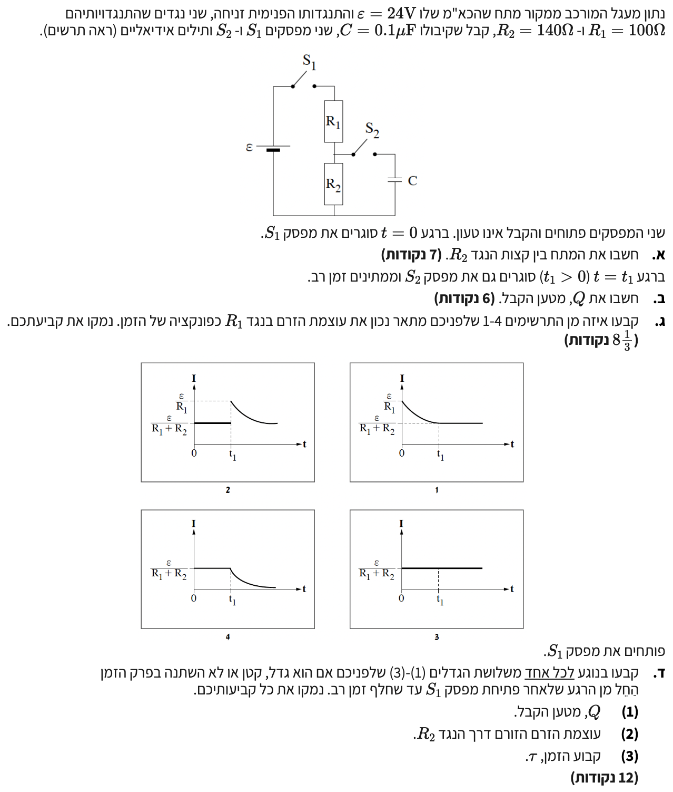

פתרון בגרות פיזיקה - 5 יח"ל
נושא: חשמל - שאלה 5 (שנת 2020)
פתרון מודרך, צעד-אחר-צעד

סעיף א'
- כא"מ המקור: \( \varepsilon = 24\text{V} \)
- התנגדות פנימית של המקור: זניחה, כלומר \( r = 0 \)
- התנגדות נגד ראשון: \( R_1 = 100\Omega \)
- התנגדות נגד שני: \( R_2 = 140\Omega \)
- קיבול הקבל: \( C = 0.1\mu\text{F} \)
המרת יחידות (MKS):
\( C = 0.1 \cdot 10^{-6}\text{F} = 10^{-7}\text{F} \) - ברגע \( t=0 \) סוגרים את מפסק \( S_1 \). מפסק \( S_2 \) נשאר פתוח.
את המתח בין קצות הנגד \( R_2 \), כלומר את \( V_{R_2} \), בזמן שמפסק \( S_1 \) סגור ומפסק \( S_2 \) פתוח.
מכיוון שמפסק \( S_2 \) פתוח, לא זורם זרם בענף של הקבל. לכן, המעגל מתנהג כמעגל טורי פשוט הכולל את המקור ושני הנגדים בלבד.
![]()
תרשים: המעגל השקול במצב שבו S1 סגור ו-S2 פתוח
הצבה ופתרון צעד-אחר-צעד:
נחשב תחילה את ההתנגדות השקולה של המעגל. הנגדים מחוברים בטור:
נחשב את הזרם הכולל במעגל לפי חוק אוהם (המתח על כל המעגל הוא \( \varepsilon \) כי אין התנגדות פנימית):
כעת, נחשב את המתח על הנגד \( R_2 \). הזרם בנגד \( R_2 \) זהה לזרם הכולל כי הם בטור:
סעיף ב'
- ברגע \( t_1 > 0 \) סוגרים גם את מפסק \( S_2 \).
- ממתינים זמן רב. משמעות "זמן רב" במעגל זרם ישר עם קבל היא שהקבל נטען במלואו והגיע למצב מתמיד (זרם באותו ענף שווה לאפס).
את המטען \( Q \) האגור בקבל לאחר המתנה של זמן רב.
לאחר "זמן רב", הקבל נטען למלוא המתח המסופק לו. הענף של הקבל מתנהג כנתק, ולכן לא זורם בו זרם. הזרם במעגל הראשי ממשיך לזרום דרך \( R_1 \) ו-\( R_2 \) כרגיל. הקבל מחובר במקביל לנגד \( R_2 \).
\( C = \frac{Q}{V} \)הצבה ופתרון:
מכיוון שלאחר זמן רב לא זורם זרם בענף הקבל, הזרם במעגל הראשי (דרך הנגדים) נשאר בדיוק כפי שהיה בסעיף א'. הקבל מחובר במקביל לנגד \( R_2 \). לכן, המתח על הקבל, \( V_C \), שווה למתח על הנגד \( R_2 \) שחישבנו בסעיף א'.
כעת, נמצא את המטען שאגור בקבל באמצעות נוסחת הקיבול:
ניתן לכתוב זאת גם במיקרו-קולון: \( Q = 1.4\mu\text{C} \)
סעיף ג'
- ארבעה תרשימים (גרפים) המתארים אפשרויות שונות לזרם \( I \) דרך הנגד \( R_1 \) כפונקציה של הזמן \( t \).
- הזמן \( t=t_1 \) הוא הרגע שבו נסגר מפסק \( S_2 \).
לקבוע איזה מהתרשימים 1-4 מתאר נכון את עוצמת הזרם בנגד \( R_1 \) כפונקציה של הזמן מתחילת הניסוי (\( t=0 \)), ולנמק.
\( V = IR \) \( i(t) = I_0e^{-t/RC} \)
עקרונות פעולת קבל:
- ברגע סגירת המעגל (כשהקבל ריק, \( t=0 \) של תהליך הטעינה, כאן \( t=t_1 \)), קבל אידיאלי מהווה קצר (קצר חשמלי רגעי, מתח אפס עליו).
- לאחר "זמן רב" (\( t \to \infty \)), קבל מהווה נתק.
ניתוח והגדרת הערכים הצפויים:
ננתח את עוצמת הזרם הצפויה דרך הנגד \( R_1 \) בשלושה פרקי זמן שונים:
כפי שחישבנו בסעיף א', המעגל פשוט טורי. הזרם קבוע ושווה ל:
ברגע שסוגרים את \( S_2 \), הקבל שאין עליו מטען התחלתי מהווה קצר רגעי. הזרם עובר כולו דרך הקבל ופוסח על הנגד \( R_2 \) המחובר אליו במקביל. לכן, ברגע זה ממש, ההתנגדות הכוללת של המעגל יורדת ל-\( R_1 \) בלבד, ומתרחשת קפיצה חדה בעוצמת הזרם לערך שיא:
כפי שהוסבר בסעיף ב', הקבל נטען במלואו והופך לנתק. הזרם מפסיק לזרום בענף שלו, וחוזר לזרום דרך \( R_2 \). הזרם דועך אקספוננציאלית חזרה לערך המקורי:
פסילת הגרפים ובחירת התרשים הנכון:
- גרף 1 נפסל כי אינו מתחיל בזרם קבוע בין זמן \( 0 \) ל-\( t_1 \) עם הערך \( 0.1\text{A} \) (כלומר \( \frac{\varepsilon}{R_1 + R_2} \)).
- גרף 3 נפסל כי אין בו קפיצה בזמן \( t_1 \) ובאינסוף הוא \( 0 \) (בניגוד לערך הצפוי \( 0.1\text{A} \)).
- גרף 4 נפסל כי לאורך כל הזמן הזרם קבוע ללא קפיצה או דעיכה.
הגרף היחידי המציג את כל הערכים על פי הניתוח שלנו הוא גרף 2.
• קבל ברגע חיבורו למקור (ללא מטען התחלתי) = חוט קצר חשמלי (התנגדות אפס).
• קבל לאחר זמן רב = נתק במעגל (התנגדות אינסופית).
ברגע שזיהיתם את הקפיצה בזרם ברגע הסגירה בגלל שהקבל יצר קצר ל-\(R_2\), התשובה הופכת ברורה.
סעיף ד'
- פותחים את מפסק \( S_1 \) (לאחר שהמתנו זמן רב כשהיה סגור). מפסק \( S_2 \) נשאר סגור.
לקבוע לגבי כל אחד משלושת הגדלים הבאים האם הוא גדל, קטן או לא השתנה בפרק הזמן ממועד פתיחת המפסק עד שחולף זמן רב, ולנמק:
- \( Q \), מטען הקבל.
- עוצמת הזרם הזורם דרך הנגד \( R_2 \).
- קבוע הזמן, \( \tau \).
\( \tau = RC \) \( V_C(t) = V_0e^{-t/RC} \) \( Q = CV \)
תרשים: המעגל השקול לאחר פתיחת S1 - הקבל נפרק דרך הנגד R2
ניתוח המצב החדש:
כאשר פותחים את מפסק \( S_1 \), אנחנו מנתקים את מקור המתח (\( \varepsilon \)) ואת הנגד \( R_1 \) מהמעגל. נוצר מעגל סגור חדש הכולל רק את הקבל \( C \) ואת הנגד \( R_2 \). הקבל, שנטען קודם לכן, יתחיל להתפרק דרך הנגד \( R_2 \).
בתהליך של פריקה, המטען שהיה אגור על לוחות הקבל זורם דרך המעגל (דרך הנגד \( R_2 \)) על מנת להשוות פוטנציאלים. לכן, המטען על לוחות הקבל הולך ופוחת עד שיגיע לאפס לאחר "זמן רב". כיוון ש-\( V_C \) קטן, לפי \( Q=CV \), גם \( Q \) קטן.
לפני פתיחת המפסק (לאחר זמן רב בסעיף ב'), הזרם בענף הקבל היה אפס, והזרם דרך \( R_2 \) היה הזרם הקבוע של המעגל הטורי (\( 0.1\text{A} \)). מיד לאחר פתיחת \( S_1 \), הקבל מתפקד כמקור מתח זמני עם מתח התחלתי של \( 14\text{V} \). הזרם ההתחלתי של הפריקה דרך \( R_2 \) יהיה \( I_0 = \frac{V_C}{R_2} = \frac{14}{140} = 0.1\text{A} \). ככל שהקבל מתפרק, המתח שלו יורד אקספוננציאלית, ולכן גם הזרם המונע על ידו דרך הנגד יורד אקספוננציאלית עד לאפס.
קבוע הזמן מוגדר כ- \( \tau = R_{eq}C \). השאלה מבררת מה קורה לגודל זה בפרק הזמן ממועד פתיחת המפסק עד שחולף זמן רב (כלומר, במהלך תהליך הפריקה עצמו):
מרגע פתיחת המפסק \( S_1 \), הקבל מתפרק אך ורק דרך הנגד \( R_2 \). לאורך כל פרק זמן זה של הפריקה, ערכי הרכיבים במעגל אינם משתנים: ההתנגדות היא \( R_2 = 140\Omega \) קבועה והקיבול הוא \( C = 0.1\mu\text{F} \) קבוע. מכאן שקבוע הזמן \( \tau = R_2 C \) נשאר קבוע ואינו משתנה לאורך כל תהליך הפריקה.